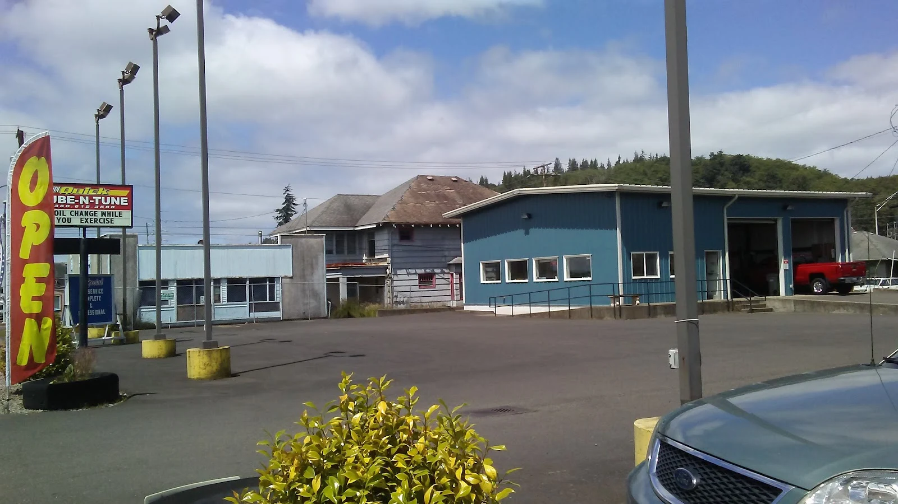

01
OIL
CHANGES.
Time for your next oil change? Call to confirm the oil, filter and service details for your vehicle.
Ask about an oil change ↗Keep life moving with local auto service.
Find Quality Quick Lube-n-Tune on Simpson Avenue
in Aberdeen, Washington.

01 / YOUR LOCAL SHOPStart with what your vehicle needs.
We’re a phone call away.
Time for your next oil change? Call to confirm the oil, filter and service details for your vehicle.
Ask about an oil change ↗Keep your vehicle’s maintenance on the radar. Tell us the make, model, mileage and what you need help with.
Discuss your vehicle ↗Something feel different behind the wheel? Describe the issue and ask whether the shop can help before you visit.
Talk it through ↗Quality Quick Lube-n-Tune is an oil change and vehicle maintenance shop at 2724 Simpson Avenue in Aberdeen, Washington.
Whether you’re planning routine service or have a question about your car, start with a conversation. Call the shop to discuss the work, current pricing and availability.
“Matt was awesome! He took care of the issue and changed my oil too.”
“Went above and beyond, and also saved me a lot of money. Ultra fast too.”
“These guys are great, leaving nothing to question with regard to my car’s current condition.”
“They have earned my loyalty and my family's.”
“Got both my cars in and out in under an hour. Will highly recommend”
“I'm never taking my car anywhere else.”
Have the make, model, year and approximate mileage ready when you call. Mention any symptoms or questions.
Ask about the right oil and service for your vehicle, current pricing and what is included before any work is agreed.
Confirm availability and timing, then head to Simpson Avenue. Credit cards, debit cards and NFC payments are accepted.
Holiday hours may vary. Call to confirm availability before your visit.
Wheelchair-accessible entrance
and parking listed on Google.
Call (360) 612-3580 with your vehicle details for current pricing and service options.
Please call the shop to confirm current availability and how to arrange your visit.
Share your vehicle’s make, model, year and mileage. Describe the service you need or any symptoms you have noticed, and ask about service scope, price and timing.
Saturday hours are 8:30 AM–3:00 PM. The shop is closed on Sundays. Holiday hours may differ.
Google lists a wheelchair-accessible entrance and parking. Credit cards, debit cards and contactless NFC payments are accepted. Call if you have specific access needs.
Oil changes & vehicle maintenance
2724 Simpson Ave · Aberdeen, WA